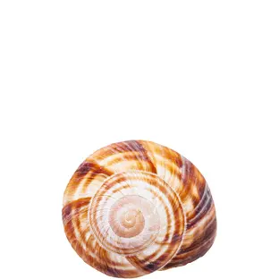
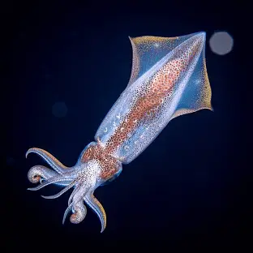

moluscos
¿Que son los moluscos?
Los moluscos (Mollusca, del latín mollis "blando") conforman uno de los grandes filos del reino animal.
Son invertebrados protóstomos celomados, triblásticos de simetría bilateral (aunque algunos pueden tener una asimetría secundaria) no segmentados, de cuerpo blando, desnudo o protegido por una concha. Los moluscos son los invertebrados más numerosos después de los artrópodos, e incluyen formas tan conocidas como las almejas, machas, navajuelas, ostras, sepias, calamares, pulpos, babosas y la gran diversidad de caracoles, tanto marinos como terrestres.
caracteristicas
Los Moluscos son metazoos, triblásticos, celomados, protóstomos, dotados inicialmente con simetría bilateral
clasificacion
Gasterópodos, bivalvos y cefalópodos
ejemplos
almejas, son unisexuales (sexos separados) y expulsan sus células sexuales al mar

machas, Es un organismo que se alimenta filtrando el agua de mar (filtrador) y su dieta está formada principalmente de plancton (zoo y fitoplancton) y de partículas de materia orgánica de pequeño tamaño que pasan a través de la arena.

pulpos, El pulpo es un invertebrado cefalópodo, tiene 8 tentáculos alrededor de la boca, y en cada tentáculo hay dos hileras de ventosas que le ayudan a atrapar a sus presas. Los pulpos tienen la capacidad de adaptar su color y la superficie del cuerpo a las características del ambiente.

MOLUSCOS, Los Moluscos son metazoos, triblásticos, celomados, protóstomos, dotados inicialmente con simetría bilateral
- 
calamares,Posee dos branquias, un sistema circulatorio formado por un corazón sistémico y dos branquiales, los cuales bombean sangre a cada uno de sus tentáculos y cabeza
- 
inicio